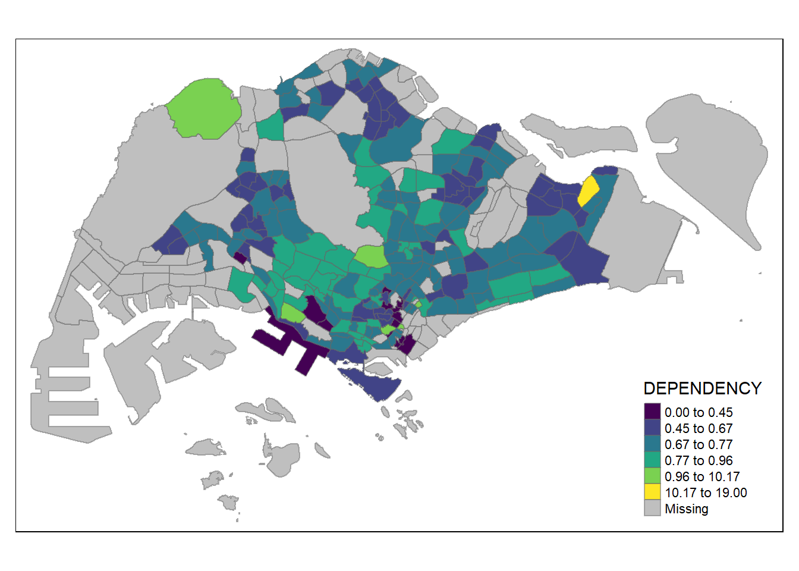
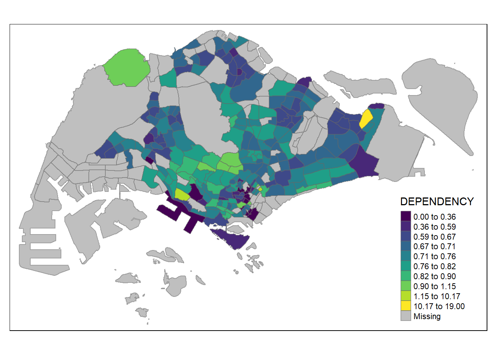
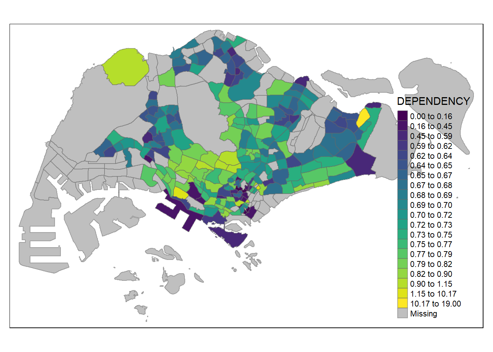
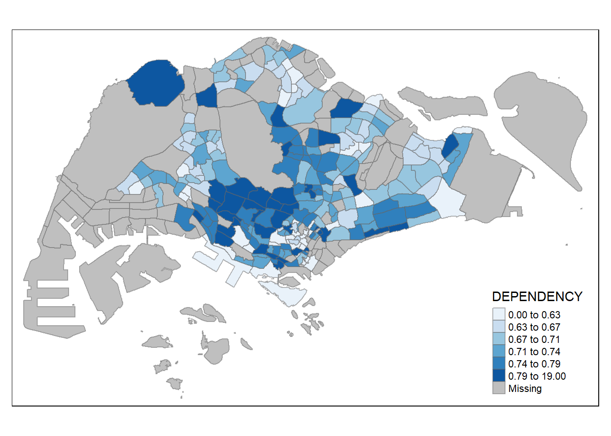
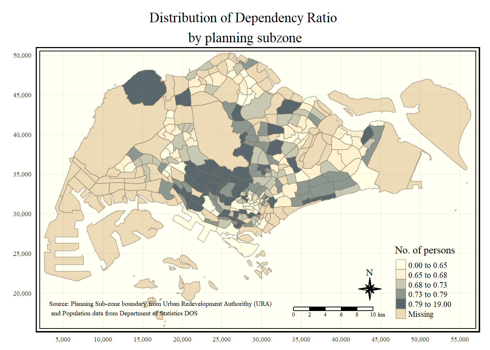
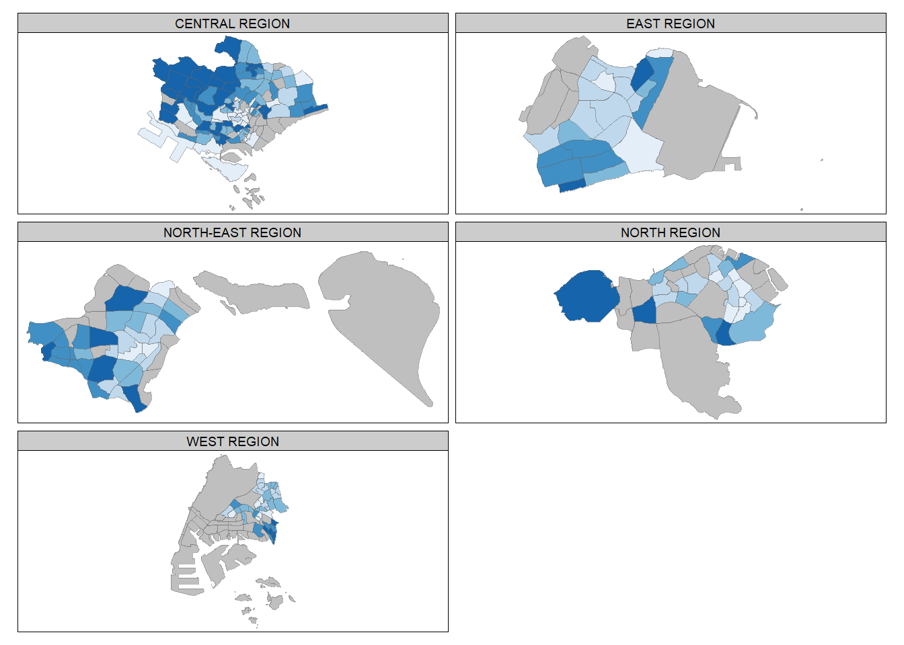

pacman::p_load(sf, tmap, tidyverse)Thematic Mapping and GeoVisualisation with R
Analysis
R
sf
tmap
tidyverse
2.1 Exercise Overview
In this hands-on exercise, I learn how to create effective and accurate thematic/choropleth maps and other geospatial visualization techniques using the tmap package in R.
Thematic mapping is a technique that uses map symbols to visualize certain characteristics of geographic features that are not naturally visible, such as population, temperature, crime rates, and property values, among others.
Geovisualization, on the other hand, involves creating graphical representations to make a place, phenomenon, or process visible. This approach leverages the human brain’s powerful spatial cognition abilities, linked to our eye-brain vision system, to better process and understand spatial information.
2.2 Data Acquisition
Two data set will be used to create the choropleth map. They are:
Master Plan 2014 Subzone Boundary (Web) (i.e.
MP14_SUBZONE_WEB_PL) in ESRI shapefile format. It can be downloaded at data.gov.sg This is a geospatial data. It consists of the geographical boundary of Singapore at the planning subzone level. The data is based on URA Master Plan 2014.Singapore Residents by Planning Area / Subzone, Age Group, Sex and Type of Dwelling, June 2011-2020 in csv format (i.e.
respopagesexfa2011to2020.csv). This is an aspatial data fie. It can be downloaded at Department of Statistics, Singapore Although it does not contain any coordinates values, but it’s PA and SZ fields can be used as unique identifiers to geocode toMP14_SUBZONE_WEB_PLshapefile.
2.3 Getting Started
For this exercise, the following R packages will be used:
readr for importing delimited text file,
tidyr for tidying data,
dplyr for wrangling data and
sf for handling geospatial data.
As readr, tidyr and dplyr are part of tidyverse package. The code chunk below will suffice to install and load the required packages in RStudio.
To install and load these packages into the R environment, we use the p_load function from the pacman package:
The p_load function conveniently installs (if necessary) and loads the sf and tidyverse packages, making them readily available for use in our analysis.
2.4 Importing Data into R
2.4.1 Importing Geospatial Data into R
The following code demonstrates how to use the st_read() function from the sf package to import the MP14_SUBZONE_WEB_PL shapefile into R as a simple feature data frame named mpsz:
mpsz <- st_read(dsn = "data/geospatial/",
layer = "MP14_SUBZONE_WEB_PL")Reading layer `MP14_SUBZONE_WEB_PL' from data source
`C:\Users\blzll\OneDrive\Desktop\Y3S1\IS415\Quarto\IS415\Hands-on_Ex\data\geospatial'
using driver `ESRI Shapefile'
Simple feature collection with 323 features and 15 fields
Geometry type: MULTIPOLYGON
Dimension: XY
Bounding box: xmin: 2667.538 ymin: 15748.72 xmax: 56396.44 ymax: 50256.33
Projected CRS: SVY21We can examine the content of mpsz by using the code chunk below
mpszSimple feature collection with 323 features and 15 fields
Geometry type: MULTIPOLYGON
Dimension: XY
Bounding box: xmin: 2667.538 ymin: 15748.72 xmax: 56396.44 ymax: 50256.33
Projected CRS: SVY21
First 10 features:
OBJECTID SUBZONE_NO SUBZONE_N SUBZONE_C CA_IND PLN_AREA_N
1 1 1 MARINA SOUTH MSSZ01 Y MARINA SOUTH
2 2 1 PEARL'S HILL OTSZ01 Y OUTRAM
3 3 3 BOAT QUAY SRSZ03 Y SINGAPORE RIVER
4 4 8 HENDERSON HILL BMSZ08 N BUKIT MERAH
5 5 3 REDHILL BMSZ03 N BUKIT MERAH
6 6 7 ALEXANDRA HILL BMSZ07 N BUKIT MERAH
7 7 9 BUKIT HO SWEE BMSZ09 N BUKIT MERAH
8 8 2 CLARKE QUAY SRSZ02 Y SINGAPORE RIVER
9 9 13 PASIR PANJANG 1 QTSZ13 N QUEENSTOWN
10 10 7 QUEENSWAY QTSZ07 N QUEENSTOWN
PLN_AREA_C REGION_N REGION_C INC_CRC FMEL_UPD_D X_ADDR
1 MS CENTRAL REGION CR 5ED7EB253F99252E 2014-12-05 31595.84
2 OT CENTRAL REGION CR 8C7149B9EB32EEFC 2014-12-05 28679.06
3 SR CENTRAL REGION CR C35FEFF02B13E0E5 2014-12-05 29654.96
4 BM CENTRAL REGION CR 3775D82C5DDBEFBD 2014-12-05 26782.83
5 BM CENTRAL REGION CR 85D9ABEF0A40678F 2014-12-05 26201.96
6 BM CENTRAL REGION CR 9D286521EF5E3B59 2014-12-05 25358.82
7 BM CENTRAL REGION CR 7839A8577144EFE2 2014-12-05 27680.06
8 SR CENTRAL REGION CR 48661DC0FBA09F7A 2014-12-05 29253.21
9 QT CENTRAL REGION CR 1F721290C421BFAB 2014-12-05 22077.34
10 QT CENTRAL REGION CR 3580D2AFFBEE914C 2014-12-05 24168.31
Y_ADDR SHAPE_Leng SHAPE_Area geometry
1 29220.19 5267.381 1630379.3 MULTIPOLYGON (((31495.56 30...
2 29782.05 3506.107 559816.2 MULTIPOLYGON (((29092.28 30...
3 29974.66 1740.926 160807.5 MULTIPOLYGON (((29932.33 29...
4 29933.77 3313.625 595428.9 MULTIPOLYGON (((27131.28 30...
5 30005.70 2825.594 387429.4 MULTIPOLYGON (((26451.03 30...
6 29991.38 4428.913 1030378.8 MULTIPOLYGON (((25899.7 297...
7 30230.86 3275.312 551732.0 MULTIPOLYGON (((27746.95 30...
8 30222.86 2208.619 290184.7 MULTIPOLYGON (((29351.26 29...
9 29893.78 6571.323 1084792.3 MULTIPOLYGON (((20996.49 30...
10 30104.18 3454.239 631644.3 MULTIPOLYGON (((24472.11 29...The reason only the first 10 records are displayed by mpsz is due to its default behaviour. Using head() would allow for the number of display records to change according to the n value.
head(mpsz, n = 5)Simple feature collection with 5 features and 15 fields
Geometry type: MULTIPOLYGON
Dimension: XY
Bounding box: xmin: 25867.68 ymin: 28369.47 xmax: 32362.39 ymax: 30435.54
Projected CRS: SVY21
OBJECTID SUBZONE_NO SUBZONE_N SUBZONE_C CA_IND PLN_AREA_N
1 1 1 MARINA SOUTH MSSZ01 Y MARINA SOUTH
2 2 1 PEARL'S HILL OTSZ01 Y OUTRAM
3 3 3 BOAT QUAY SRSZ03 Y SINGAPORE RIVER
4 4 8 HENDERSON HILL BMSZ08 N BUKIT MERAH
5 5 3 REDHILL BMSZ03 N BUKIT MERAH
PLN_AREA_C REGION_N REGION_C INC_CRC FMEL_UPD_D X_ADDR
1 MS CENTRAL REGION CR 5ED7EB253F99252E 2014-12-05 31595.84
2 OT CENTRAL REGION CR 8C7149B9EB32EEFC 2014-12-05 28679.06
3 SR CENTRAL REGION CR C35FEFF02B13E0E5 2014-12-05 29654.96
4 BM CENTRAL REGION CR 3775D82C5DDBEFBD 2014-12-05 26782.83
5 BM CENTRAL REGION CR 85D9ABEF0A40678F 2014-12-05 26201.96
Y_ADDR SHAPE_Leng SHAPE_Area geometry
1 29220.19 5267.381 1630379.3 MULTIPOLYGON (((31495.56 30...
2 29782.05 3506.107 559816.2 MULTIPOLYGON (((29092.28 30...
3 29974.66 1740.926 160807.5 MULTIPOLYGON (((29932.33 29...
4 29933.77 3313.625 595428.9 MULTIPOLYGON (((27131.28 30...
5 30005.70 2825.594 387429.4 MULTIPOLYGON (((26451.03 30...2.4.2 Importing Attribute Data into R
Next, we will import the respopagesexfa2011to2020.csv file into the R environment and save it into an R dataframe called popdata. The task can be performed using the read_csv() function from the readr package, as shown below:
popdata <- read_csv("data/aspatial/respopagesexfa2011to2020.csv")2.4.3 Data Preparation
Before creating a thematic map, it’s necessary to prepare a data table with values from the year 2020. This table should include the following variables: PA, SZ, YOUNG, ECONOMY ACTIVE, AGED, TOTAL, and DEPENDENCY.
- YOUNG: Includes age groups from 0-4 up to 20-24.
- ECONOMY ACTIVE: Includes age groups from 25-29 up to 60-64.
- AGED: Includes age groups 65 and above.
- TOTAL: Includes all age groups.
- DEPENDENCY: The ratio between the young and aged populations against the economy active group.
2.4.3.1 Data Wrangling
The following data wrangling and transformation functions will be used:
pivot_wider() from the tidyr package.
mutate(), filter(), group_by(), and select() from the dplyr package.
popdata2020 <- popdata %>%
filter(Time == 2020) %>%
group_by(PA, SZ, AG) %>%
summarise(`POP` = sum(`Pop`)) %>%
ungroup()%>%
pivot_wider(names_from=AG,
values_from=POP)%>%
mutate(YOUNG = rowSums(.[3:6])
+rowSums(.[14])) %>%
mutate(`ECONOMY ACTIVE` = rowSums(.[7:13])+
rowSums(.[15]))%>%
mutate(`AGED`=rowSums(.[16:21])) %>%
mutate(`TOTAL`=rowSums(.[3:21])) %>%
mutate(`DEPENDENCY` = (`YOUNG` + `AGED`)
/`ECONOMY ACTIVE`) %>%
select(`PA`, `SZ`, `YOUNG`,
`ECONOMY ACTIVE`, `AGED`,
`TOTAL`, `DEPENDENCY`)2.4.3.2 Joining the attribute data and geospatial data
Before performing a georelational join, it’s necessary to convert the values in the PA and SZ fields to uppercase. This is because these fields contain both uppercase and lowercase letters, while the corresponding fields SUBZONE_N and PLN_AREA_N are in uppercase.
popdata2020 <- popdata2020 %>%
mutate_at(.vars = vars(PA, SZ),
.funs = list(toupper)) %>%
filter(`ECONOMY ACTIVE` > 0)Next, the left_join() function from the dplyr package is used to join the geospatial data and attribute table using SUBZONE_N and SZ as the common identifiers:
mpsz_pop2020 <- left_join(mpsz, popdata2020,
by = c("SUBZONE_N" = "SZ"))Take note: The left_join() function from the dplyr package is used with the mpsz simple feature data frame as the left data table to ensure that the output remains a simple features data frame.
write_rds(mpsz_pop2020, "data/rds/mpszpop2020.rds")2.5 Choropleth Mapping Geospatial Data Using tmap
Choropleth mapping involves the symbolisation of enumeration units, such as countries, provinces, states, counties or census units, using area patterns or graduated colors. For example, a social scientist may need to use a choropleth map to portray the spatial distribution of aged population of Singapore by Master Plan 2014 Subzone Boundary.
Two approaches can be used to prepare thematic map using tmap, they are:
Plotting a thematic map quickly by using qtm().
Plotting highly customisable thematic map by using tmap elements.
2.5.1 Plotting a choropleth map quickly by using qtm()
The quickest way to draw a choropleth map is using the qtm() function, which provides a good default visualization with minimal coding. Here’s how you can use it:
tmap_mode("plot")
qtm(mpsz_pop2020, fill = "DEPENDENCY")2.5.2 Creating a choropleth map by using tmap’s elements
While qtm() is useful for quickly drawing a choropleth map, it offers limited control over the aesthetics of individual layers. To create a high-quality cartographic choropleth map, you should use tmap elements like tm_shape(), tm_fill(), and tm_borders().
tm_shape(mpsz_pop2020)+
tm_fill("DEPENDENCY",
style = "quantile",
palette = "Blues",
title = "Dependency ratio") +
tm_layout(main.title = "Distribution of Dependency Ratio by planning subzone",
main.title.position = "center",
main.title.size = 1.2,
legend.height = 0.45,
legend.width = 0.35,
frame = TRUE) +
tm_borders(alpha = 0.5) +
tm_compass(type="8star", size = 2) +
tm_scale_bar() +
tm_grid(alpha =0.2) +
tm_credits("Source: Planning Sub-zone boundary from Urban Redevelopment Authorithy (URA)\n and Population data from Department of Statistics DOS",
position = c("left", "bottom"))
2.5.2.1 Drawing a base map
The foundation of a tmap visualization is tm_shape(), which is followed by layer elements like tm_fill() and tm_polygons().
tm_shape(mpsz_pop2020) +
tm_polygons()
2.5.2.2 Drawing a choropleth map using tm_polygons()
To create a choropleth map that shows the geographical distribution of a variable (e.g., DEPENDENCY) by planning subzone, assign the target variable to tm_polygons().
tm_shape(mpsz_pop2020)+
tm_polygons("DEPENDENCY")
Things to note with tm_polygons():
The default interval binning method is “pretty.”
The default color scheme is “YlOrRd” from ColorBrewer.
Missing values are shaded in grey.
2.5.2.3 Drawing a choropleth map using tm_fill() and tm_border()
tm_polygons() is essentially a wrapper for tm_fill() and tm_border(). tm_fill() colors the polygons, while tm_borders() adds the borders. Examine the difference in output between the 2 following code chunks:
tm_shape(mpsz_pop2020)+
tm_fill("DEPENDENCY")
tm_shape(mpsz_pop2020)+
tm_fill("DEPENDENCY") +
tm_borders(lwd = 0.1, alpha = 1)
Notice that light-gray border lines have been added on the choropleth map with tm_border().
The alpha argument is used to define transparency number between 0 (totally transparent) and 1 (not transparent). By default, the alpha value of the col is used (normally 1).
Beside alpha argument, there are three other arguments for tm_borders(), they are:
col = border colour,
lwd = border line width. The default is 1, and
lty = border line type. The default is “solid”.
2.5.3 Data classification methods of tmap
Choropleth maps often involve data classification to group observations into ranges or classes. tmap offers ten classification methods, including “fixed,” “sd,” “equal,” “pretty” (default), “quantile,” “kmeans,” “hclust,” “bclust,” “fisher,” and “jenks.”
2.5.3.1 Plotting choropleth maps with built-in classification methods
The following code demonstrates a quantile classification with 5 classes:
tm_shape(mpsz_pop2020)+
tm_fill("DEPENDENCY",
n = 5,
palette = "viridis",
style = "quantile") +
tm_borders(alpha = 0.5)The equal classification method can be used as shown below:
tm_shape(mpsz_pop2020)+
tm_fill("DEPENDENCY",
n = 5,
palette = "viridis",
style = "equal") +
tm_borders(alpha = 0.5)The fisher classification method can be used as shown below:
tm_shape(mpsz_pop2020)+
tm_fill("DEPENDENCY",
n = 5,
palette = "viridis",
style = "fisher") +
tm_borders(alpha = 0.5)The sd classification method can be used as shown below:
tm_shape(mpsz_pop2020)+
tm_fill("DEPENDENCY",
n = 5,
palette = "viridis",
style = "sd") +
tm_borders(alpha = 0.5)
The hclust classification method can be used as shown below:
tm_shape(mpsz_pop2020)+
tm_fill("DEPENDENCY",
n = 5,
palette = "viridis",
style = "hclust") +
tm_borders(alpha = 0.5)The jenks classification method can be used as shown below:
tm_shape(mpsz_pop2020)+
tm_fill("DEPENDENCY",
n = 5,
palette = "viridis",
style = "jenks") +
tm_borders(alpha = 0.5)Additionally, we can try preparing choropleth maps by using similar classification methods (i.e. kmeans) but with differing number of classes. The following code chunks use kmeans clustering with different class sizes (2, 6, 10, 20)
tm_shape(mpsz_pop2020)+
tm_fill("DEPENDENCY",
n = 2,
palette = "viridis",
style = "kmeans") +
tm_borders(alpha = 0.5)tm_shape(mpsz_pop2020)+
tm_fill("DEPENDENCY",
n = 6,
palette = "viridis",
style = "kmeans") +
tm_borders(alpha = 0.5)
tm_shape(mpsz_pop2020)+
tm_fill("DEPENDENCY",
n = 10,
palette = "viridis",
style = "kmeans") +
tm_borders(alpha = 0.5)
tm_shape(mpsz_pop2020)+
tm_fill("DEPENDENCY",
n = 20,
palette = "viridis",
style = "kmeans") +
tm_borders(alpha = 0.5)
2.5.3.2 Plotting choropleth map with custom break
For all the built-in styles, the category breaks are computed internally. In order to override these defaults, the breakpoints can be set explicitly by means of the breaks argument to the tm_fill(). It is important to note that, in tmap the breaks include a minimum and maximum. As a result, in order to end up with n categories, n+1 elements must be specified in the breaks option (the values must be in increasing order).
Before we get started, it is always a good practice to get some descriptive statistics on the variable before setting the break points. Code chunk below will be used to compute and display the descriptive statistics of DEPENDENCY field.
summary(mpsz_pop2020$DEPENDENCY) Min. 1st Qu. Median Mean 3rd Qu. Max. NA's
0.0000 0.6540 0.7063 0.7712 0.7657 19.0000 92 With reference to the results above, we set break point at 0.60, 0.70, 0.80, and 0.90 using the breaks argument. In addition, we also need to include a minimum and maximum, which we set at 0 and 100. Our breaks vector is thus c(0, 0.60, 0.70, 0.80, 0.90, 1.00)
Now, we will plot the choropleth map by using the code chunk below.
tm_shape(mpsz_pop2020)+
tm_fill("DEPENDENCY",
breaks = c(0, 0.60, 0.70, 0.80, 0.90, 1.00)) +
tm_borders(alpha = 0.5)2.5.4 Colour Scheme
tmap supports color ramps defined by the user or from the RColorBrewer package.
2.5.4.1 Using ColourBrewer palette
To change the color scheme, assign the desired palette to the palette argument of tm_fill().
tm_shape(mpsz_pop2020)+
tm_fill("DEPENDENCY",
n = 6,
style = "quantile",
palette = "Blues") +
tm_borders(alpha = 0.5)
To reverse the color scheme, add a “-” prefix.
tm_shape(mpsz_pop2020)+
tm_fill("DEPENDENCY",
style = "quantile",
palette = "-Blues") +
tm_borders(alpha = 0.5)2.5.5 Map Layouts
Map layout involves combining all map elements into a cohesive visualization, including the title, scale bar, compass, margins, and aspect ratios.
2.5.5.1 Map Legend
tmap provides several options for customizing the legend’s placement, format, and appearance.
tm_shape(mpsz_pop2020)+
tm_fill("DEPENDENCY",
style = "jenks",
palette = "Blues",
legend.hist = TRUE,
legend.is.portrait = TRUE,
legend.hist.z = 0.1) +
tm_layout(main.title = "Distribution of Dependency Ratio by planning subzone \n(Jenks classification)",
main.title.position = "center",
main.title.size = 1,
legend.height = 0.45,
legend.width = 0.35,
legend.outside = FALSE,
legend.position = c("right", "bottom"),
frame = FALSE) +
tm_borders(alpha = 0.5)2.5.5.2 Map style
tmap allows you to change the map’s layout settings using tmap_style().
The code chunk below shows the classic style is used.
tm_shape(mpsz_pop2020)+
tm_fill("DEPENDENCY",
style = "quantile",
palette = "-Greens") +
tm_borders(alpha = 0.5) +
tmap_style("classic")2.5.5.3 Cartographic Furniture
tmap also provides functions to add other map elements, such as a compass, scale bar, and grid lines.
In the code chunk below, tm_compass(), tm_scale_bar() and tm_grid() are used to add compass, scale bar and grid lines onto the choropleth map.
tm_shape(mpsz_pop2020)+
tm_fill("DEPENDENCY",
style = "quantile",
palette = "Blues",
title = "No. of persons") +
tm_layout(main.title = "Distribution of Dependency Ratio \nby planning subzone",
main.title.position = "center",
main.title.size = 1.2,
legend.height = 0.45,
legend.width = 0.35,
frame = TRUE) +
tm_borders(alpha = 0.5) +
tm_compass(type="8star", size = 2) +
tm_scale_bar(width = 0.15) +
tm_grid(lwd = 0.1, alpha = 0.2) +
tm_credits("Source: Planning Sub-zone boundary from Urban Redevelopment Authorithy (URA)\n and Population data from Department of Statistics DOS",
position = c("left", "bottom"))
To reset the default style, refer to the code chunk below.
tmap_style("white")2.5.6 Drawing Small Multiple Choropleth Maps
Small multiple maps, or facet maps, allow the visualization of how spatial relationships change with another variable, such as time. These maps are composed of several maps arranged side by side or stacked vertically. In tmap, small multiple maps can be plotted in three different ways:
By assigning multiple values to at least one of the aesthetic arguments.
By defining a group-by variable in
tm_facets().By creating multiple stand-alone maps with
tmap_arrange().
2.5.6.1 By assigning multiple values to at least one of the aesthetic arguments
One way to create small multiple choropleth maps is by defining multiple values for an aesthetic argument such as fill. This method is straightforward and allows for visual comparison across variables.
The following code chunk uses tm_fill() with multiple variables
tm_shape(mpsz_pop2020)+
tm_fill(c("YOUNG", "AGED"),
style = "equal",
palette = "Blues") +
tm_layout(legend.position = c("right", "bottom")) +
tm_borders(alpha = 0.5) +
tmap_style("white")In this example:
The
c("YOUNG", "AGED")argument creates two maps side by side, one for the young population and one for the aged population.The
styleargument is set to"equal"to ensure consistent class breaks across the maps.
The following code chunk uses tm_polygons() with multiple styles
tm_shape(mpsz_pop2020)+
tm_polygons(c("DEPENDENCY","AGED"),
style = c("equal", "quantile"),
palette = list("Blues","Greens")) +
tm_layout(legend.position = c("right", "bottom"))In this example:
- The 2 variables, “DEPENDENCY” and “AGED”, are mapped with different classification styles (“equal” and “quantile”) and color palettes (“Blues” and “Greens”)
2.5.6.2 By defining a group-by variable in tm_facets()
Another approach to creating small multiple maps is by using the tm_facets() function, which allows you to create separate maps based on a grouping variable.
tm_shape(mpsz_pop2020) +
tm_fill("DEPENDENCY",
style = "quantile",
palette = "Blues",
thres.poly = 0) +
tm_facets(by="REGION_N",
free.coords=TRUE,
drop.shapes=TRUE) +
tm_layout(legend.show = FALSE,
title.position = c("center", "center"),
title.size = 20) +
tm_borders(alpha = 0.5)
In this example:
The
by = "REGION_N"argument intm_facets()creates separate maps for each region.free.coords = TRUEallows each facet to have its own coordinate system, anddrop.shapes = TRUEdrops shapes not belonging to any of the regions.
2.5.6.3 By creating multiple stand-alone maps with tmap_arrange()
You can also create individual maps and then arrange them side by side using tmap_arrange().
youngmap <- tm_shape(mpsz_pop2020)+
tm_polygons("YOUNG",
style = "quantile",
palette = "Blues")
agedmap <- tm_shape(mpsz_pop2020)+
tm_polygons("AGED",
style = "quantile",
palette = "Blues")
tmap_arrange(youngmap, agedmap, asp=1, ncol=2)
In this example:
Two maps,
youngmapandagedmap, are created individually.tmap_arrange()is then used to display these maps side by side withncol = 2.
2.5.7 Mappping Spatial Object Meeting a Selection Criterion
Instead of creating small multiple choropleth maps, you can also map spatial objects that meet a specific selection criterion using selection functions.
tm_shape(mpsz_pop2020[mpsz_pop2020$REGION_N=="CENTRAL REGION", ])+
tm_fill("DEPENDENCY",
style = "quantile",
palette = "Blues",
legend.hist = TRUE,
legend.is.portrait = TRUE,
legend.hist.z = 0.1) +
tm_layout(legend.outside = TRUE,
legend.height = 0.45,
legend.width = 5.0,
legend.position = c("right", "bottom"),
frame = FALSE) +
tm_borders(alpha = 0.5)In this example:
The data is filtered to only include regions within the “CENTRAL REGION”.
The resulting map shows the dependency ratio specifically for this region, with additional customization for the legend and layout.
These methods allow for versatile and detailed visual representations of spatial data, enabling deeper insights into geographical patterns and trends.
2.6. References
Tutorial provided by Professor Kam Tin Seong©, Singapore Management University
Reference: https://r4gdsa.netlify.app/chap02.html